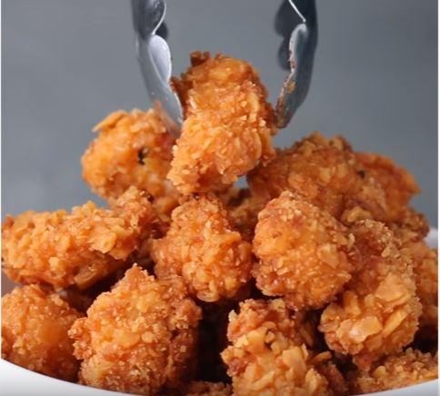

Cheddar Ranch Popcorn Chicken
Ingredientes: (para 4)
- 2 Lechugas de pollo
- 2 Tazas de buttermilk
- 1 Paquete de salsa ranch
- 2 Tazas de queso
- 2 Tazas de galletas cracker

Preparacion:
- Cortar las pechugas en tamaño chiquito (snacks).
- En un bowl grande, combinar las pechugas cortadas, buttermilk y la salsa ranch.
- Refrigerar 2 horas
- En un bolsa zip, romper las galletitas cracker en pedacitos chicos (para reemplazar pan molido
- Colocar las galletitas cracker en un bowl mediano y rebosar las piezas de pechuga hasta que
cubiertas por completo.
- Calentar aceite a 180°C y freir el pollo hasta que las galletas se pongan doradas (3min aprox)
- Colocarlas en un papel para sacar exceso de aceite
- Servir con la salsa ranch o cualquier otra salsa.
- Disfruta!